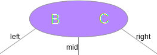
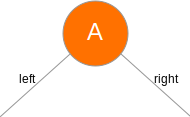
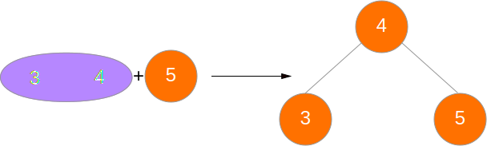

计算机科学中，2-3树是一种树型数据结构，内部节点（存在子节点的节点）要么有2个孩子和1个数据元素，要么有3个孩子和2个数据元素，叶子节点没有孩子，并且有1个或2个数据元素。 ——wikipedia 2-3树词条
很多时候我们学平衡二叉树上来就是红黑，其实2-3树相对更容易理解，而且理解2-3树也对理解红黑树有一定帮助。
2-3树的定义
一棵2-3树是一棵符合如下条件之一的树：
- 空树
- 根节点是一个三叉节点的树
- 根节点是一个二叉节点的树
其中
三叉节点是一个有2个值和3条链接的节点，其中3个链接：
- 左边的链接连到一棵2-3树，要求其中的值均小于这一节点的值中的任何一个
- 中间的链接连到一棵2-3树，要求其中的值介于这一节点的两个值之间
- 右边的链接连到一棵2-3树，要求其中的值均大于这一节点的值中的任何一个

二叉节点是一个有1个值和2条链接的节点，其中2个链接：
- 左边的链接连到一棵2-3树，要求其中的值均小于这一节点的值
- 右边的链接连到一棵2-3树，要求其中的值均大于这一节点的值

在2-3树完全平衡的状态下，所有叶子节点距离根节点的层数应该都是一样的。
查找元素
在2-3树中查找元素的方法和普通的二叉搜索树差异不大，算法如下：
- 如果当前树是空树，返回没有找到
- 如果当前树根是二叉节点，则和二叉搜索树查找方法一样
- 如果当前树根是三叉节点，则：
- 如果要查找的值是节点中两个值中的一个，则返回找到
- 如果要查找的值小于节点中两个值中任何一个，则在left子树中递归搜寻
- 如果要查找的值介于节点中两个值之间，则在mid子树中递归搜寻
- 如果要查找的值大于节点中两个值中任何一个，则在right子树中递归搜寻
插入元素
要插入一个元素，我们可以先用和上面搜索元素相似的方法找到要插入的位置（即元素“应该“在的位置的父节点），然后在对应的节点上做插入。
在对应节点上插入的方法如下：
如果节点根节点，且它是空的，直接添加即可。
如果节点是一个二叉节点，则直接将其和要插入的元素一起变为一个三叉节点（此时这个二叉节点没有子元素，这是由2-3树特性保证的，我们无需担心子元素去向的问题）
如果这个节点是一个三叉节点，则：
如果这个节点是树根，直接将其分开成为一个两层的2-3树，如图：

如果这个节点的父节点是一个二叉节点，则将要插入的元素和这个节点中的两个元素比较，将大小处于中间的那个元素移到父节点中，如图：

如果这个节点的父节点是一个三叉节点，则将要插入的元素和这个节点中的两个元素比较，将大小处于中间的那个元素移到父节点中，然后在对父节点做同样的操作，直到遇到二叉节点或达到根节点为止。

2-3树的删除
这个比较麻烦，情况比较多，我们暂且不理他。
（所以实际上2-3树用的没有红黑树广）
代码实现
纯C语言代码实现，注释我有空补：
WeakType.hC语言的弱类型支持库，我将在另一篇文章中讲解C语言的弱类型。
1
2
3
4
5
6
7
8
9
10
11
12
13
14
15
16
17
18
19
20
21
22
typedef void *T;
typedef const void *const_T;
typedef T (*CopyElementFunction)(const_T origin);
typedef void (*DestroyElementFunction)(T toDestroy);
typedef int8_t (*CompareElementFunction)(const_T a, const_T b);
typedef struct {
CopyElementFunction copy;
DestroyElementFunction destroy;
CompareElementFunction compare;
} TypeInfo;
void swap(T *a, T *b);Node.h&Node.c节点及相关操作
1
2
3
4
5
6
7
8
9
10
11
12
13
14
15
16
17
18
19
20
21
22
23
24
25
26
27
28
29
30
31
32
33
34
35
36
37
38
39
40
41
42
43
44
45
46
47
48// Node.h
typedef struct NodeType {
struct NodeType *parent;
u_int8_t type;
T values[2]; // for BINARY, use [0] only
struct NodeType *children[3]; // for BINARY, use [0] and [2] only
} Node;
typedef struct {
u_int8_t from_which_side;
T value;
Node *new_left;
Node *new_right;
} TridentSplitResult;
void destroyNode(Node *node, TypeInfo type);
Node *searchNode(Node *from, const_T value, TypeInfo type);
bool node_contain_value(const Node *node, const_T value, TypeInfo type);
T search_value_in_node(const Node *node, const_T value, TypeInfo type);
Node *createBinaryNode(const_T value, TypeInfo type);
void insert_value_into_binary_node(Node *node, const_T value, TypeInfo type);
TridentSplitResult split_trident_with_value(Node *node, const_T value, TypeInfo type);
TridentSplitResult split_trident_with_last_split_result(Node *node, TridentSplitResult last_result, TypeInfo type);
void insert_last_split_result_into_binary_node(Node *node, TridentSplitResult last_result, TypeInfo type);1
2
3
4
5
6
7
8
9
10
11
12
13
14
15
16
17
18
19
20
21
22
23
24
25
26
27
28
29
30
31
32
33
34
35
36
37
38
39
40
41
42
43
44
45
46
47
48
49
50
51
52
53
54
55
56
57
58
59
60
61
62
63
64
65
66
67
68
69
70
71
72
73
74
75
76
77
78
79
80
81
82
83
84
85
86
87
88
89
90
91
92
93
94
95
96
97
98
99
100
101
102
103
104
105
106
107
108
109
110
111
112
113
114
115
116
117
118
119
120
121
122
123
124
125
126
127
128
129
130
131
132
133
134
135
136
137
138
139
140
141
142
143
144
145
146
147
148
149
150
151
152
153
154
155
156
157
158
159
160
161
162
163
164
165
166
167
168
169// Node.c
Node *createBinaryNode(const_T value, TypeInfo type) {
Node *new_node = malloc(sizeof(Node));
new_node->type = BINARY;
new_node->parent = NULL;
new_node->values[0] = type.copy(value);
new_node->values[1] = NULL;
for (size_t i = 0; i < 3; ++i) {
new_node->children[i] = NULL;
}
return new_node;
}
void destroyNode(Node *node, TypeInfo type) {
if (node != NULL) {
type.destroy(node->values[0]);
destroyNode(node->children[LEFT], type);
destroyNode(node->children[RIGHT], type);
if (node->type == TRIDENT) {
type.destroy(node->values[1]);
destroyNode(node->children[MIDDLE], type);
}
free(node);
}
}
bool node_contain_value(const Node *node, const_T value, TypeInfo type) {
return type.compare(node->values[0], value) == 0 ||
(node->type == TRIDENT && type.compare(node->values[1], value) == 0);
}
T search_value_in_node(const Node *node, const_T value, TypeInfo type) {
if (type.compare(node->values[0], value) == 0) {
return node->values[0];
} else {
assert(node->type == TRIDENT && type.compare(node->values[1], value) == 0);
return node->values[1];
}
}
Node *searchNode(Node *from, const_T value, TypeInfo type) {
if (from == NULL) {
return NULL;
}
bool is_last_layer = from->children[0] == NULL;
if (node_contain_value(from, value, type) || is_last_layer) {
return from;
}
if (type.compare(value, from->values[0]) < 0) {
return searchNode(from->children[LEFT], value, type);
} else if (from->type == BINARY ||
type.compare(value, from->values[1]) > 0) {
return searchNode(from->children[RIGHT], value, type);
} else {
return searchNode(from->children[MIDDLE], value, type);
}
}
void insert_value_into_binary_node(Node *node, const_T value, TypeInfo type) {
assert(node->type == BINARY);
node->type = TRIDENT;
if (type.compare(value, node->values[0]) < 0) {
node->values[1] = node->values[0];
node->values[0] = type.copy(value);
} else {
node->values[1] = type.copy(value);
}
}
TridentSplitResult split_trident_with_value(Node *node, const_T value, TypeInfo type) {
assert(node->type == TRIDENT);
assert(node->children[0] == NULL);
T the_value = type.copy(value);
if (type.compare(value, node->values[0]) < 0) {
swap(&the_value, &node->values[0]);
} else if (type.compare(node->values[1], value) < 0) {
swap(&the_value, &node->values[1]);
}
TridentSplitResult result;
if (node->parent == NULL) {
result.from_which_side = NO_PARENT;
} else if (node == node->parent->children[LEFT]) {
result.from_which_side = LEFT;
} else if (node == node->parent->children[RIGHT]) {
result.from_which_side = RIGHT;
} else if (node == node->parent->children[MIDDLE]) {
assert(node->parent->type == TRIDENT);
result.from_which_side = MIDDLE;
}
result.value = the_value;
result.new_left = createBinaryNode(node->values[0], type);
result.new_right = createBinaryNode(node->values[1], type);
type.destroy(node->values[0]);
type.destroy(node->values[1]);
return result;
}
TridentSplitResult split_trident_with_last_split_result(Node *node, TridentSplitResult last_result, TypeInfo type) {
assert(node->type == TRIDENT);
T the_value = type.copy(last_result.value);
type.destroy(last_result.value);
if (type.compare(the_value, node->values[0]) < 0) {
swap(&the_value, &node->values[0]);
} else if (type.compare(node->values[1], the_value) < 0) {
swap(&the_value, &node->values[1]);
}
TridentSplitResult result;
if (node->parent == NULL) {
result.from_which_side = NO_PARENT;
} else if (node == node->parent->children[LEFT]) {
result.from_which_side = LEFT;
} else if (node == node->parent->children[RIGHT]) {
result.from_which_side = RIGHT;
} else if (node == node->parent->children[MIDDLE]) {
assert(node->parent->type == TRIDENT);
result.from_which_side = MIDDLE;
}
result.value = the_value;
result.new_left = createBinaryNode(node->values[0], type);
result.new_right = createBinaryNode(node->values[1], type);
type.destroy(node->values[0]);
type.destroy(node->values[1]);
if (last_result.from_which_side == LEFT) {
result.new_left->children[LEFT] = last_result.new_left;
result.new_left->children[RIGHT] = last_result.new_right;
result.new_right->children[LEFT] = node->children[MIDDLE];
result.new_right->children[RIGHT] = node->children[RIGHT];
} else if (last_result.from_which_side == MIDDLE) {
result.new_left->children[LEFT] = node->children[LEFT];
result.new_left->children[RIGHT] = last_result.new_left;
result.new_right->children[LEFT] = last_result.new_right;
result.new_right->children[RIGHT] = node->children[RIGHT];
} else {
result.new_left->children[LEFT] = node->children[LEFT];
result.new_left->children[RIGHT] = node->children[MIDDLE];
result.new_right->children[LEFT] = last_result.new_left;
result.new_right->children[RIGHT] = last_result.new_right;
}
result.new_left->children[LEFT]->parent = result.new_left;
result.new_left->children[RIGHT]->parent = result.new_left;
result.new_right->children[LEFT]->parent = result.new_right;
result.new_right->children[RIGHT]->parent = result.new_right;
return result;
}
void insert_last_split_result_into_binary_node(Node *node, TridentSplitResult last_result, TypeInfo type) {
assert(node->type == BINARY);
node->type = TRIDENT;
T the_value = type.copy(last_result.value);
if (type.compare(the_value, node->values[0]) < 0) {
node->values[1] = node->values[0];
node->values[0] = the_value;
} else {
node->values[1] = the_value;
}
if (last_result.from_which_side == LEFT) {
node->children[LEFT] = last_result.new_left;
node->children[LEFT]->parent = node;
node->children[MIDDLE] = last_result.new_right;
node->children[MIDDLE]->parent = node;
} else {
node->children[MIDDLE] = last_result.new_left;
node->children[MIDDLE]->parent = node;
node->children[RIGHT] = last_result.new_right;
node->children[RIGHT]->parent = node;
}
}Tree.h&Tree.c树
1
2
3
4
5
6
7
8
9
10
11
12
13
14
15
16
17
18
19
20
21
22
23// Tree.h
typedef struct {
Node *root;
TypeInfo element_type;
} Tree;
Tree *createTree(TypeInfo type);
void destroyTree(Tree *tree);
bool contains(Tree *tree, const_T value);
const_T search(Tree *tree, const_T value);
void insert(Tree *tree, const_T value);1
2
3
4
5
6
7
8
9
10
11
12
13
14
15
16
17
18
19
20
21
22
23
24
25
26
27
28
29
30
31
32
33
34
35
36
37
38
39
40
41
42
43
44
45
46
47
48
49
50
51
52
53
54
55
56
57
58
59
60
61// Tree.c
Tree *createTree(TypeInfo type) {
Tree *new_tree = malloc(sizeof(Tree));
new_tree->element_type = type;
new_tree->root = NULL;
return new_tree;
}
void destroyTree(Tree *tree) {
assert(tree != NULL);
destroyNode(tree->root, tree->element_type);
free(tree);
}
bool contains(Tree *tree, const_T value) {
assert(tree != NULL);
Node *node = searchNode(tree->root, value, tree->element_type);
return node_contain_value(node, value, tree->element_type);
}
const_T search(Tree *tree, const_T value) {
assert(tree != NULL);
Node *node = searchNode(tree->root, value, tree->element_type);
return search_value_in_node(node, value, tree->element_type);
}
void insert(Tree *tree, const_T value) {
assert(tree != NULL);
if (tree->root == NULL) {
tree->root = createBinaryNode(value, tree->element_type);
return;
}
Node *should_insert_in_node = searchNode(tree->root, value, tree->element_type);
if (should_insert_in_node->type == BINARY) {
insert_value_into_binary_node(should_insert_in_node, value, tree->element_type);
} else {
TridentSplitResult result = split_trident_with_value(should_insert_in_node, value, tree->element_type);
Node *origin_node = should_insert_in_node;
should_insert_in_node = should_insert_in_node->parent;
free(origin_node);
while (should_insert_in_node != NULL && should_insert_in_node->type == TRIDENT) {
result = split_trident_with_last_split_result(should_insert_in_node, result, tree->element_type);
origin_node = should_insert_in_node;
should_insert_in_node = should_insert_in_node->parent;
free(origin_node);
}
if (should_insert_in_node == NULL) {
tree->root = createBinaryNode(result.value, tree->element_type);
tree->element_type.destroy(result.value);
tree->root->children[LEFT] = result.new_left;
tree->root->children[LEFT]->parent = tree->root;
tree->root->children[RIGHT] = result.new_right;
tree->root->children[RIGHT]->parent = tree->root;
} else if (should_insert_in_node->type == BINARY) {
insert_last_split_result_into_binary_node(should_insert_in_node, result, tree->element_type);
tree->element_type.destroy(result.value);
}
}
}